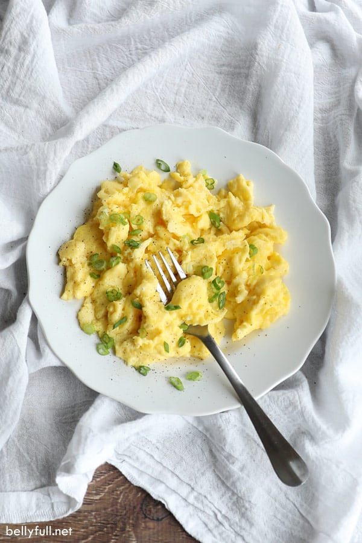

Best Scrambled Eggs

These scrambled eggs are the best!
Ingredients:
- 4 large eggs
- 1/4 cup half-n-half
- 1/4 tsp salt
- 1 TBSP unsalted butter
- black pepper
Steps:
- In a mixing bowl, whisk together eggs, half-n-half, and salt.
- Melt the bitter in a pan over medium heat.
- Add the eggs to the center of the pan and reduce the heat to medium-low.
- Gently push the eggs from one end of the pan to the other. Remove eggs from heat while there is still some moisture showing.
- Transfer to serving plates. Sprinkle with pepper.